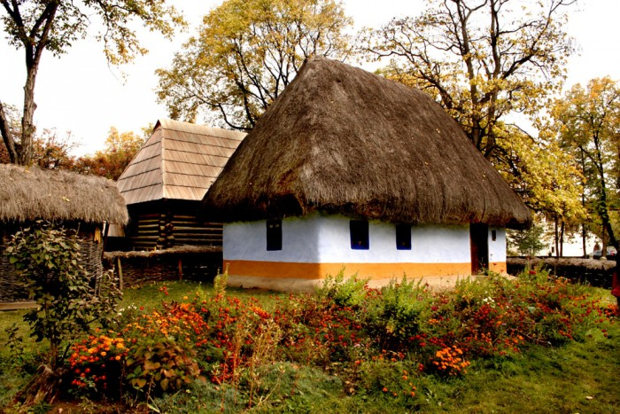

București
București este capitala României și, în același timp, cel mai populat oraș și cel mai important centru industrial și comercial al țării.
Prima mențiune a localității apare în 1459. În 1862 devine capitala Principatelor Unite. De atunci a suferit schimbări continue, devenind centrul scenei artistice, culturale și mass-media românești. Arhitectura elegantă și atmosfera sa urbană i-au adus în Belle Époque supranumele de „Micul Paris”.
 Obiective turistice:Palatul Parlamentului, Centrul Istoric,
Muzeul Satului , Bastionul Țesătorilor, Piața Sfatului.
Obiective turistice:Palatul Parlamentului, Centrul Istoric,
Muzeul Satului , Bastionul Țesătorilor, Piața Sfatului.
Palatul Parlamentului

Vestit pentru dimensiunile impresionante, Palatul Parlamentului este unul dintre cele mai interesante cladiri pe care ar trebui sa le vizitezi daca ajungi in Bucuresti. Acest edificiu grandios este caracterizat de melanjul arhitectonic deosebit care reuneste stilul brancovenesc si influentele stilului renascentist, germanic si baroc. Cunoscuta si sub numele de Casa Poporului, constructia surprinde prin opulenta celor peste 1000 de incaperi. De la mobilier din lemn masiv si usi sculptate, la coloane de marmura, de la lustre de cristal, la draperii din matase si covoare imense, aceasta atractie turistica reprezinta un univers al luxului si al extravagantei in care merita sa zabovesti cateva ore.
Muzeul Național al Satului „Dimitrie Gusti”

Muzeul Satului a fost inaugurat la 10 mai 1936, în prezența regelui Carol al II-lea al României, iar pentru public, pe 17 mai 1936, fiind în prezent una dintre cele mai mari atracții turistice ale Bucureștiului.
Viața în mediul rural și obiceiurile rurale au o însemnătate majoră în istoria României. În primele secole ale acestei ere, colonizarea romană a trebuit să aibă un caracter rural, iar înainte de prima jumătate a secolului trecut, XX, mare parte din populația României trăia la sat. Comunitățile rurale erau organizate în așa fel încât să satisfacă toate nevoile zilnice. Hainele erau făcute manual. Pentru a construi Muzeul Satului pe care Dimitrie Gusti obișnuia să îl numească „sunetul trist al clopotelor istoriei României”, casele au fost dezasamblate, bucată cu bucată, transportate cu trenul, căruța sau cu barca până la București unde au fost asamblate la loc pe suprafața muzeului de astăzi aflată pe malul lacului Herăstrău. Cea mai veche casă este construită în secolul al XVII-lea, iar cea mai recentă aparține secolului al XIX-lea. Casele din regiunile de deal și din regiunile de munte sunt deosebite de cele din zona de câmpie prin fundația înaltă, cele de la șes fiind majoritatea cu fundații joase, cele provenite din zonele unde invadau dușmanii des fiind jumătate îngropate în pământ.
Centrul Istoric
Centrul Istoric este una cele mai indragite si cochete zone din Bucuresti, un loc impanzit de cladiri construite in stil neoclasic si neobaroc, la parterul carora vei gasi numeroase terase ademenitoare, cafenele, restaurante si magazine. O plimbare pe stradutele intortocheate si foarte populate ale Centrului Istoric iti da impresia ca ai facut o calatorie in timp si ca te afli in Bucurestiul de altadata. Cea mai cunoscuta strada pe care trebuie sa ajungi este Lipscani. Aici se afla si Hanul cu Tei, o cladire impresionanta care a fost construita inca din anul 1833.
Parcul Cișmigiu
Parcul Cișmigiu este cea mai veche grădină publică din București. Este așezată în centrul orașului, are o suprafață de circa 16 hectare și este mărginită de două artere importante: bulevardul Regina Elisabeta și bulevardul Schitu Măgureanu. În partea sud-estică a grădinii este Colegiul Național Gheorghe Lazăr. Grădina Cișmigiu este amenajată în genul parcurilor engleze și are mai multe intrări: două prin bulevardul Regina Elisabeta, două prin bulevardul Schitu Măgureanu, una prin str. Știrbei Vodă. Este clasată pe lista monumentelor istorice din București cu B-II-a-A-19655.
Curtea Veche
Curtea Veche este prima curte domnească din București, a devenit nefuncțională după incendiul din 1718, care a distrus întregul București și după cutremurul din 1738. Întreaga Curte Domnească era formată dintr-un palat - Palatul Voievodal, o biserică - Biserica Buna Vestire, cunoscută ulterior sub numele de Biserica Curtea Veche, case cu saloane de recepție, cancelariile domnești, grajduri și grădini. Nu se cunosc prea multe detalii despre întemeietorul curții, dar conform opiniei cercetătorilor care au studiat istoria Bucureștiului, curtea pare a fi construită de către Mircea cel Bătrân, undeva la sfârșitul secolului al XIV-lea și începutul secolului a XV-lea. După cele două calamități din secolul al XVIII-lea, care au distrus curtea și clădirile aferente, a fost construită o nouă curte domnească, Curtea Nouă.